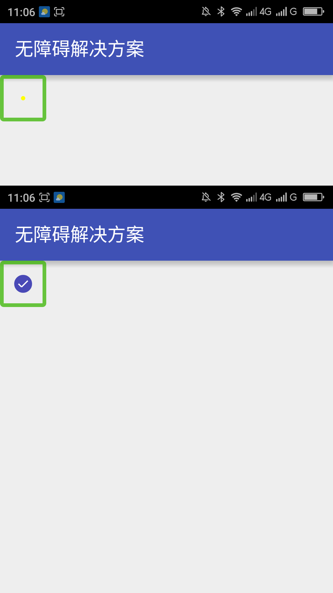
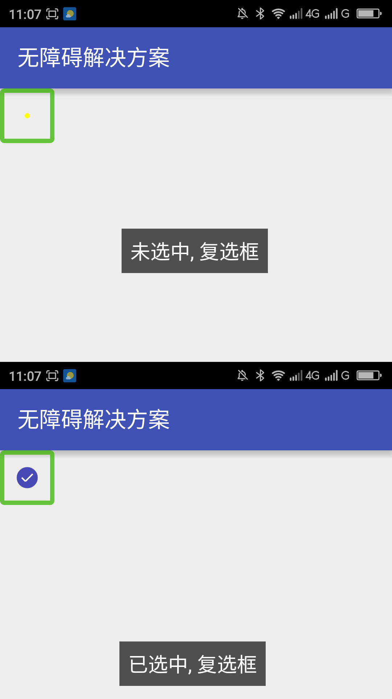

让自定义的复选框支持无障碍____20160601
【问题描述】
继承自View的自定义复选框没有经过无障碍处理，无法支持无障碍服务。屏幕阅读器用户无法知道此控件的选中状态、无法知道此控件的类型、及时提示状态改变等。导致屏幕阅读器用户无法使用此控件。
【问题代码】
下面是自定义复选框的代码，此复选框选中和取消选中的时候会有动画，选中和未选中的时候控件的展示形式不一样。此自定义控件只有无障碍焦点，不会朗读选中状态，也不会及时朗读状态改变。
注：此自定义控件的自定义属性xml文件请参看“附1“；此自定义控件的使用的布局代码请参看“附2”。
复制内容
【问题解决方案描述】
自定义控件要支持无障碍需要重写与无障碍有关的方法。onInitializeAccessibilityEvent()方法是初始化无障碍事件的方法；onInitializeAccessibilityNodeInfo()此方法是初始化无障碍节点的方法；onPopulateAccessibilityEvent()此方法是填充无障碍文本的方法，在此方法中最好只设置无障碍文本不要设置除无障碍文本之外的其他属性，在此方法中设置除无障碍文本之外的属性会被其他方法覆盖，要设置其他的无障碍属性请在onInitializeAccessibilityEvent()方法中设置；这3个方法是主要的无障碍方法、还有一些其他的方法可以根据实际情况重写这些方法。
本解决方案中的自定义复选框，因为没有文本，所以没有重写onPopulateAccessibilityEvent()方法。重写了onInitializeAccessibilityEvent()和onInitializeAccessibilityNodeInfo()方法，此外还重写了sendAccessibilityEvent()，在此方法中不处理AccessibilityEvent_TYPE_VIEW_CLICKED(点击事件)，因为无障碍事件设置了选中状态之后收到AccessibilityEvent.TYPE_VIEW_CLICKED事件会及时朗读选中状态的改变，但是及时朗读的选中状态不正确，在音点击之后本自定义控件不是马上改变选中状态而是有一段时间的动画，所以状态改变有一定的延迟，这导致AccessibilityEvent.TYPE_VIEW_SELECTED也不能正确的朗读出及时的选中状态。在本解决方案中在点击事件中利用View.postDelayed()方法延迟发送无障碍事件来做到及时朗读状态改变的效果。
【解决方案】
下面的代码重写了onInitializeAccessibilityEvent()、onInitializeAccessibilityNodeInfo()、sendAccessibilityEvent()。在点击事件（onClick）中利用View.postDelayed()方法延迟发送无障碍事件。达到的效果是：获得焦点的时候会朗读选中状态+控件类型，如”已选中 复选框“，点击之后会及时朗读新的选中状态，朗读的形式和获得焦点的时候一致。
复制内容
【前后效果图对比】
|  |  |
| 优化前，复选框有焦点，聚焦和点击均无提示； | 优化后，复选框聚焦提示当前选中状态，点击后，提示点击后的选中状态； |